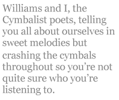
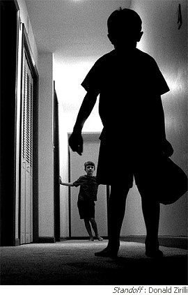

What struck me most that evening were the peacocks, men rearing up like roosters, little flowery smirks decorating their poemcalls, which hunkered bravely beneath the burden of testosterone. I would even say they shone like gaudy baubles that are better suited than diamonds for certain kinds of sunlight. Yes, perhaps poetry readings are a time for costume jewelry, but I also enjoyed the more circumspect offerings. My favorite was a simple meditation on a Victorian artisan, an honest questioning of that artisan’s motives, her mind as she worked… was it the poet’s mind or the craftsman’s mind that guided her hand? Was her concern to “get it right” or to discover it anew? How remarkable for me to listen to thoughts that could have come from my own head. This poet asked all the right questions.
Peacocks or no, the worst stereotypes had stayed home. No unabashed childhood horror stories, no atonal screeds, no embarrassingly detailed diary entries. Two young people read, but one was good and the other was brief! I was pleasantly shocked. The good one was in his early teens (the older I get the worse I am at estimating the age of youth), a prodigy and the youngest of the peacocks. He rhymed, as the young so often do (perhaps they have something to teach us in this matter), but amazingly allowed the rhyme to bring out his message instead of diverting him into contrivances. He used repetition quite effectively. I even wondered if it were a triolet at one point. After he was done, I had this tremendous urge to pull him aside and give him advice for days. Early success can be devastating. Don’t expect too much... aim for the stars… don’t try to be a good poet, try to become a good poet... you have far to go but you are facing the right direction... don’t make the mistakes I made! I saw so much potential so fragilely positioned. Sigh. I ended up not speaking a word to him.
I was, after all, very busy, due to an extremely important detail that I have neglected to mention thus far: I was the feature that evening, I and some other fellow. We were reading for the William Carlos Williams Poetry Cooperative and, because the Rutherford Public Library’s auditorium was under construction, we read at the William Carlos Williams Center in Rutherford, New Jersey. This is a rare occasion, as the William Carlos Williams Center rarely hosts poetry events. Word is that poetry doesn’t sell enough tickets. I’ll give you a moment to inhale the irony.
Done? Good. Let’s get back to me. Here I was, with that other fellow, trying to read poetry in the shadow of a poetry giant (I’d forgotten to stand on his shoulders). I began our ordeal with a grab for the horns. In other words, I read some Williams. Unfortunately, due to my diligent preparation in the service of my own poems, I hadn’t quite studied the poems well enough to understand them (if such a thing is even possible), but I had read them enough to recite them without stuttering. I read them, in fact, with enthusiasm (they were littered with exclamation points, after all), and left the meaning to my esteemed audience. For those of you following along with scorecards, I read “Dawn” and the beginning of Book Two of Paterson.
I then handed the podium to that other fellow, whose name is Gene Myers. Together, we run an online magazine called Now Culture. I do the drudgery, he provides the Genius (Thus his name. My name, which means “king of the world,” has no bearing on the matter.). He was not one of the peacocks, though I assure you he is sufficiently egotistical to be a poet. His style, however, is unassuming, intimate. He somehow commands the very attention his quietness requires. And those who make the effort to lean in are rewarded with not just original poetry, but a new language. Whereas I took the charming approach of unapologetically belting out a couple of Williams poems and sitting down again, Gene explained how each Williams poem influenced him and then read a poem of his own which displayed that influence. I could have done the same, but since I had found these poems just a week before, the influence hadn’t quite settled in yet.
It’s not often that I have a starring role in these dramedies, and I found it a bit odd. Not that I had any trouble strutting and fretting my half hour upon the stage, but the more direct social interactions did not come so naturally.Or did they? Perhaps what flummoxed me was just how well I carried the baton. For one thing, I took a few precious moments from my poetry to sell my new chapbook. I even dared to compare it with Williams’ epic poetical book, Paterson, even though it is but a feather compared to that bird. I said we were both trying to integrate the historical with the personal. Such poppycock. I’d say we both managed to avoid the personal, or at least the autobiographical, in the same way, with a lot of fluffery and stomp. I think there should be a term for it. Let’s call it Cymbalism. Williams and I, the Cymbalist poets, telling you all about ourselves in sweet melodies but crashing the cymbals throughout so you’re not quite sure who you’re listening to. Williams used letters and news flashes. I used drawings and timelines (It’s really quite a fascinating piece of lint. It’s called My History of Mental Illness. I give it four stars. Buy it.).
Anyway (what a brilliant transition!), there I was, comparing myself to God in order to make a few bucks (thirty). Yes, the business of poetry. Let’s talk about my monetary victories. First, from an old friend who could not well afford it. I told him the book was on the house. He told me not to be ridiculous, and for once I took his advice (and his money). Then there was the sponsor of the reading who kindly bought a book for the library. Then there was the sponsor of the next reading at that location. I signed all three books, my nominal scrawl feeling like the final flourish of my pomposity. And how brightly I deigned to smile at the open readers. In some cases, I even came up with a cogent remark about the poem they read.
Seeing myself on the brink of becoming a social animal led me to think about why we do this, why we write poems, why we read them out loud. It seems axiomatic to me that poetry has a rebellious spirit, at the very least it celebrates what the sentimental call specialness, celebration of the individual spark. Yet here we were, a group of poets. So is that how one fits in, by being special? How can I rebel in a group of rebels? Some are driven mad by this conundrum, or at least their poems are, creating gratuitous gruesomeness or noisy nonsense. Many more, though, remain blissfully unaware of it. They are either perfectly happy to be in a special group of special people, or they feel that they are the only one who is pursuing specialness. All the other poets are laboring simply to create the scenery in which they can shine.
Every group of every sort should have its poet, the one who questions, the one who dares the new. Does a group of poets have its poet as well? Am I this poets’ poet or merely a poet? Which do I want to be? Am I that Victorian artisan, and what is going through my head? When I write a poem, am I pursuing a craft, a grand tradition, trying humbly to live up to it... or am I bored with poetry, bored with language, bored with existence and trying to find the voice of God in a teacup? The answers are not easy even for me, the supposed proprietor of this mind. I believe they are yes, yes, yes, yes, yes, yes and yes.